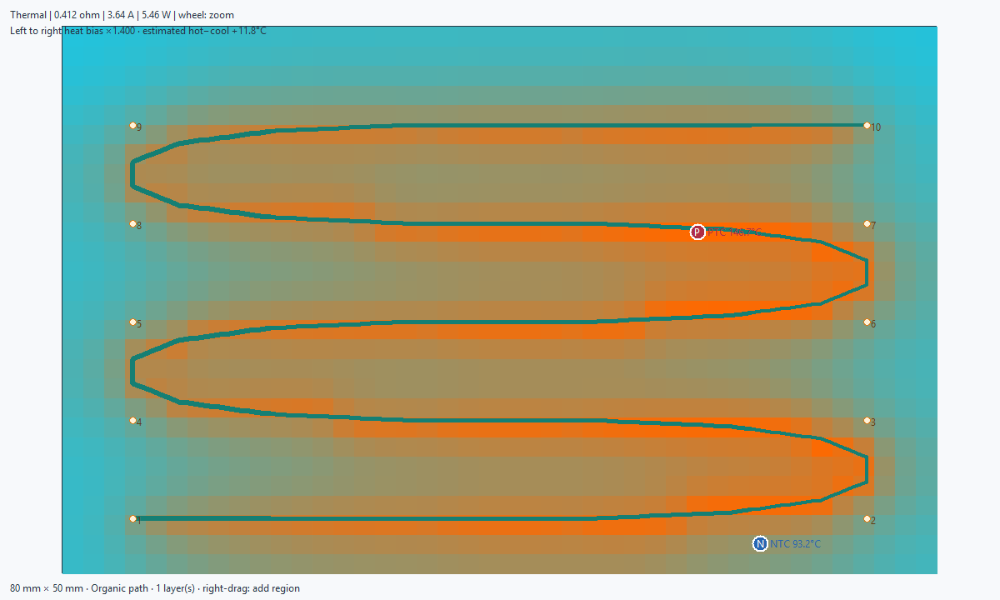

Set board dimensions, copper, supply, layer count, trace width and spacing. Preview copper, simulate the thermal map, review placement, then apply only the reviewed geometry.
Choose Organic path and enter ordered X%,Y% control points, at least three. The route rounds its corners and follows one continuous series path. Choose Draw path on preview to start a new route by clicking; numbered draft points appear immediately. Select Preview for the actual width-coded copper. Right-drag on the preview to add a circular heating region. Each region row is name,X%,Y%,radius%,resistance factor; a factor above 1 narrows copper locally.
Select a directional heat bias and ratio from 0.5 to 4. A ratio above 1 narrows copper toward the nominated hot end; a ratio below 1 narrows the opposite end. Both change total resistance and current. On Thermal, optionally set a positive target hot-to-cool temperature difference and select Simulate / tune. The tool samples ratios and reports the achieved model difference. It warns when the target cannot be reached within the permitted range. A zero target simulates the chosen ratio without tuning.
The thermal preview marks a PTC hotspot/safety candidate at the hottest grid cell meeting the copper keepaway and an NTC representative-control candidate near average temperature, apart from the PTC where possible. The results table gives PCB coordinates; JSON export includes local and PCB coordinates. These are planning markers only. They do not place components or account for sensor footprint size, mounting, circuitry, control dynamics or DRC.

The reduced-order steady-state model distributes calculated copper loss into a board-plane grid with lateral conduction and uniform two-sided convection. It does not solve enclosure airflow, radiation, anisotropic laminate, adhesive interfaces, attached masses or closed-loop control. Predicted temperatures above 180 °C are flagged as outside a safe design range.
Window previews do not change the PCB. Configure the origin in Placement, select Preview, inspect the result, then Apply to PCB. Changing settings or the board requires a fresh preview. Review placement, undo/redo and exports are in More. Run KiCad DRC after applying and connect the generated terminals afterward.